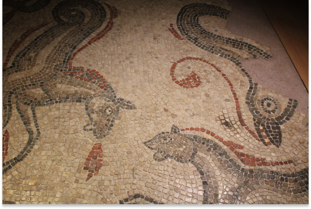

There is no doubt, as we refer back through centuries of recorded Art History, that humans have always been driven to share messages with each other by leaving marks in visible places, for all who may pass by to see. Ancient cave paintings, Egyptian hieroglyphics, Native American cave paintings and wall art, graffiti carved into the walls by prisoners held at the Tower of London, the intricate and beautiful carvings and statues left behind by the Greeks… When it comes to public art, and arguments for its importance, the reference list is endless. Humans have been leaving behind messages and marks for others to see for as long as we have walked the Earth.
Valley of the Kings, LUXOR, Egypt: PHOTO CREDIT: 2H Media- via UNSPLASH.com
We look to ancient hieroglyphics left behind by Egyptians; they are discovered in their tombs and in the ruins of their cities. These intricate murals built from illustrations and symbols, tell us stories from long ago; of worship, sacrifice, and human struggle. These artworks communicate across time and space, and culture. The significance and beauty is worth observing.
Photos Taken at the Tower of London, London, England-UK (07/20/2022)

Brazilian Cave Art: PHOTO CREDIT: Vitor Paladini- via UNSPLASH.com
In the image above, we see a mural of cave paintings, found in Brazil. These images have long outlived their creators, but still carry the same message. We get valuable cultural insights from artworks like this; and if we take the time, we can find a human connection with people we will never have the ability to meet in person. We see a mural depicting, in my view, some sort of ritual or battle. Their are weapons, or possibly instruments, mixed into a whirlwind of movement amongst animal and human figures.
Photo Taken at the Roman Baths, Bath, England-UK (07/18/2022)
It is haunting to study the graffiti left behind by former prisoners of the Tower of London, many of whom were to be executed. So many intricate carvings, masterful artworks done by the condemned; all of whom wanted so badly to share what they had to say. They were able to leave their voices behind, permanently scratched into the walls.
These examples from long ago are only a small sampling of significant graffiti art. If we really take a look back through time, we may see that quite a lot of our former fine art can be called “graffiti.”